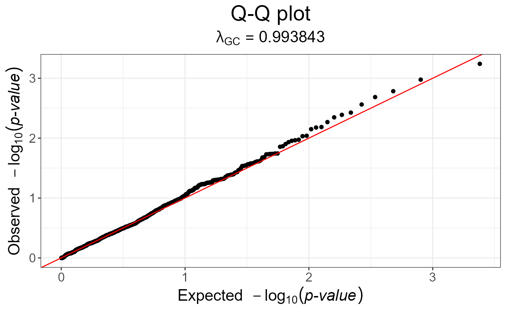

MAX3 statistic
snp_MAX3.RdCompute the MAX3 statistic, which tests for three genetic models (additive, recessive and dominant).
snp_MAX3(Gna, y01.train, ind.train = rows_along(Gna), val = c(0, 0.5, 1))
Arguments
| Gna | A FBM.code256
(typically |
|---|---|
| y01.train | Vector of responses, corresponding to |
| ind.train | An optional vector of the row indices that are used, for the training part. If not specified, all rows are used. Don't use negative indices. |
| val | Computing \(\smash{\displaystyle\max_{x \in val}}~Z_{CATT}^2(x)\).
|
Value
An object of classes mhtest and data.frame returning one
score by SNP. See methods(class = "mhtest").
Details
P-values associated with returned scores are in fact the minimum of the p-values of each test separately. Thus, they are biased downward.
References
Zheng, G., Yang, Y., Zhu, X., & Elston, R. (2012). Robust Procedures. Analysis Of Genetic Association Studies, 151-206. http://dx.doi.org/10.1007/978-1-4614-2245-7_6.
Examples
set.seed(1) # constructing a fake genotype big.matrix N <- 50; M <- 1200 fake <- snp_fake(N, M) G <- fake$genotypes G[] <- sample(as.raw(0:3), size = length(G), replace = TRUE) G[1:8, 1:10]#> [,1] [,2] [,3] [,4] [,5] [,6] [,7] [,8] [,9] [,10] #> [1,] 1 0 2 0 0 2 0 0 0 2 #> [2,] 2 0 0 0 2 0 NA 0 0 0 #> [3,] NA NA 0 0 NA 0 0 NA 0 0 #> [4,] 2 NA NA 1 1 2 2 0 NA 1 #> [5,] 2 1 NA 0 1 NA 0 2 NA NA #> [6,] NA 0 NA 2 NA 0 1 NA 0 2 #> [7,] 2 1 0 2 1 2 2 1 1 0 #> [8,] NA 2 2 0 0 0 2 NA 1 2# Specify case/control phenotypes fake$fam$affection <- rep(1:2, each = N / 2) # Get MAX3 statistics y01 <- fake$fam$affection - 1 str(test <- snp_MAX3(fake$genotypes, y01.train = y01))#> Classes ‘mhtest’ and 'data.frame': 1200 obs. of 1 variable: #> $ score: num 3.976 1.591 0.551 2.22 0.201 ... #> - attr(*, "transfo")=function (x) #> - attr(*, "predict")=function (xtr) #> ..- attr(*, "srcref")=Class 'srcref' atomic [1:8] 98 15 100 3 15 3 98 100 #> .. .. ..- attr(*, "srcfile")=Classes 'srcfilecopy', 'srcfile' <environment: 0xd89b510># Armitage trend test (well calibrated because only one test) test2 <- snp_MAX3(fake$genotypes, y01.train = y01, val = 0.5) snp_qq(test2)